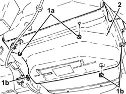

1040E12 LOWER FUEL TANK PROTECTION - R R
- Path
- Procedures > 10 ENGINE > 1040 FUEL TANK AND PIPES > 1040E PROTECTIONS - FASTENINGS > 1040E12 LOWER FUEL TANK PROTECTION - R R
- Kind
- repair procedure (removal / refitting; the operation number is the code)
- Applies to
- engines: 1.8, 2.2; all production periods
- Interactive page
- https://sloeber94.github.io/elrnDB-fCrm/en/#/194000296
Applies to: engines: 1.8, 2.2; all production periods
 Removing
Removing
 Refitting
Refitting- Position the vehicle on a lift.
Op. 1076B30 FRONT EXHAUST SILENCER - R + R
1. Undo nuts (1a) and remove clips (1b) securing the lower fuel tank protection.
2. Remove the lower fuel tank protection.

Applies to: engines: 1.8, 2.2; all production periods
Refitting
Removing- Replace the lower fuel tank protection and secure it using the bands and the nuts.
Op. 1076B30 FRONT EXHAUST SILENCER - R + R
- Remove the vehicle from the lift.